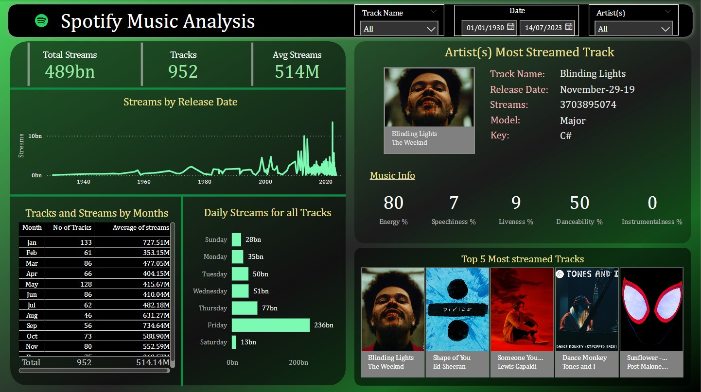
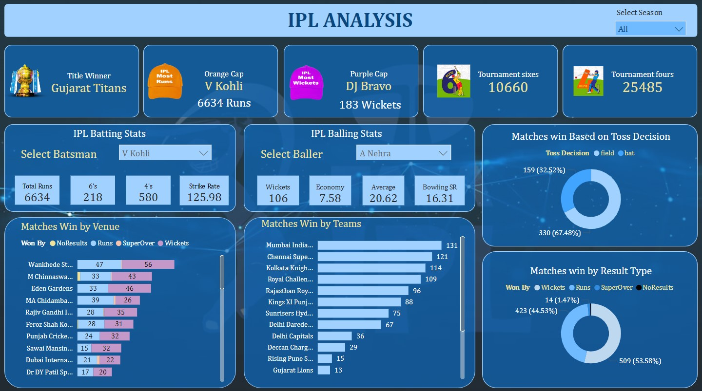
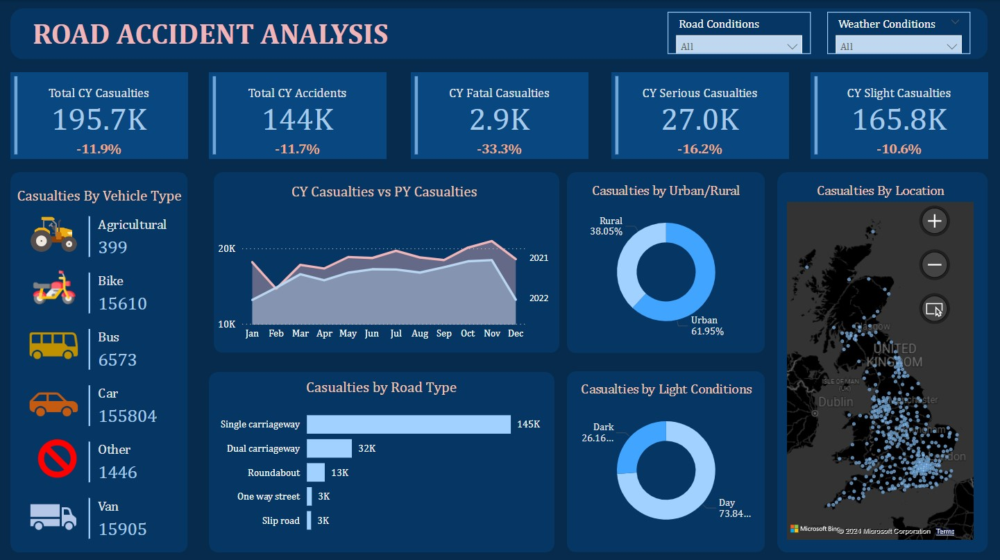

Data Visualization using Power BI
These projects demonstrate my skills in Power BI by showcasing my ability to create dynamic and interactive dashboards that provide actionable insights and facilitate data-driven decision-making across various domains.
Spotify Songs Analysis
The aim of this dashboard is to deliver in-depth insights into streaming activity, detailing total streams, track counts, and trends over various time periods, including yearly, monthly, and daily data. It offers company and stakeholders the flexibility to filter by track name, artist, and date range, enabling them to view the top 5 streamed songs by a selected artist along with detailed music attributes for those tracks. This capability allows for a detailed understanding of public music preferences, identifies popular artists and tracks, and provides a comprehensive view of total user engagement patterns on the app.
Indian Premier League Data Analysis
This dashboard is designed to offer teams, their owners, and stakeholders a thorough analysis of player statistics and performance across multiple seasons. It presents a detailed overview of each player's achievements and contributions, including metrics such as runs, wickets, and overall impact. The dashboard also identifies the team with the highest number of wins, tracks performance across various venues, and calculates winning percentages based on wickets, runs, or super overs.Additionally, the dashboard features filtering options to view statistics by individual seasons, providing a granular look at performance trends over time. This functionality enables team owners and decision-makers to assess player performance in detail, aiding in strategic decisions related to player retention, trades, and auction selections. Ultimately, the insights derived from this dashboard support informed decision-making and strategic planning to enhance team performance throughout the seasons.
Road Accidents Data Analysis
This dashboard is designed to offer an in-depth analysis of road accidents across the UK, providing valuable insights into the factors influencing accident rates. It allows users to filter data by road conditions and weather conditions to assess how these variables impact the frequency and severity of accidents. The dashboard displays key metrics such as the total number of accidents and casualties, segmented by their level of seriousness, and tracks changes in these figures compared to the previous year. Additionally, it provides a breakdown of casualties by different vehicle types and road types, enabling a detailed understanding of which factors contribute most significantly to accident outcomes. The dashboard also examines the effect of urban versus rural settings and the time of day (day vs night) on casualty rates. To further enhance analysis, it features a map of the UK that highlights major cities, revealing their higher susceptibility to accidents. This comprehensive view supports better decision-making for traffic safety improvements and policy development.
